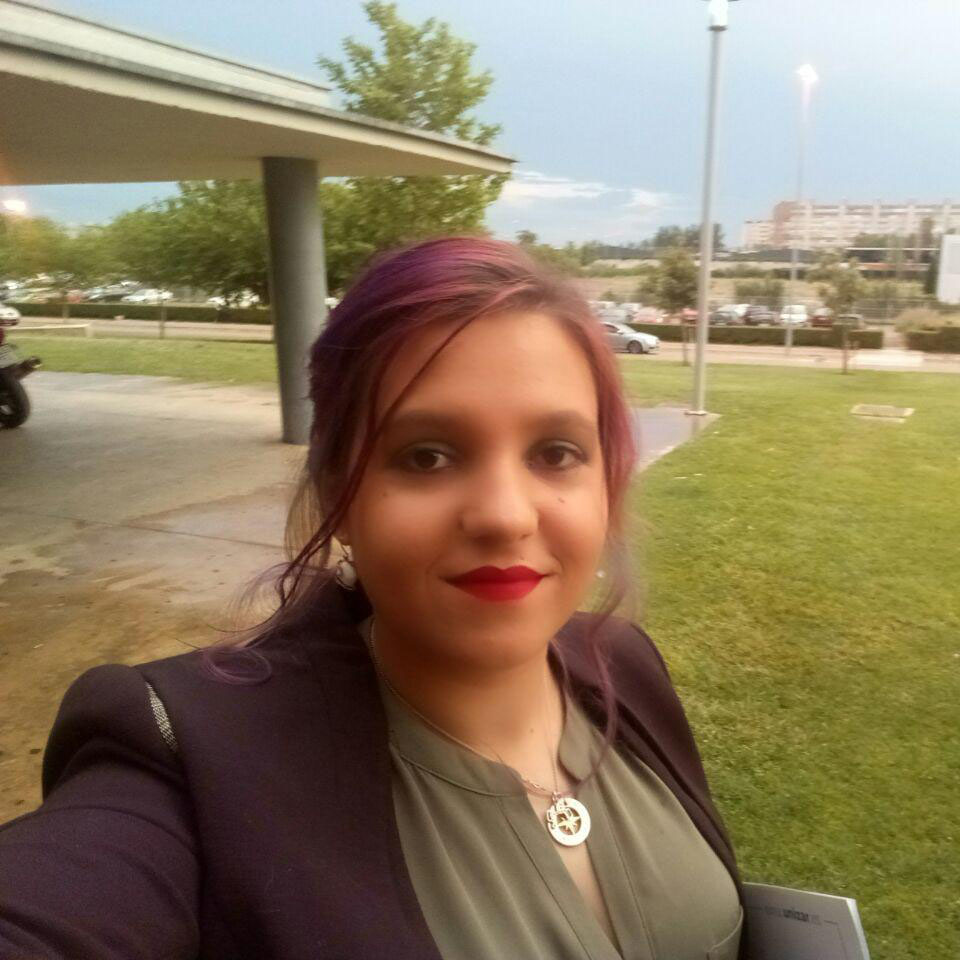

Sandra Malpica Mallo, Ph.D. Student
smalpica@unizar.esUniversidad de Zaragoza, I3A
Hi! I am currently a 4th year Ph.D. student working under the supervision of Prof. Belen Masia and Prof. Diego Gutierrez at the Graphics and Imaging Lab. I obtained my Bachelor degree at Universidad de Zaragoza, majoring in Computer Engineering (with a Computer Science mention) in 2017. Later, I obtained my Master degree at the same university, majoring in Biomedical Engineering in 2018. During 2019 and 2020 I spent some months as an intern with Adobe Research and Facebook Reality Labs respectively. Those experiences allowed me to learn in new environments, meet great researchers and step out of my comfort zone!
I am really interested in the particularities of human perception, and how to take advantage of those to solve current computer graphics limitations, either software- or hardware-caused. So far, my main research interests are moving around human perception (specially visual-related perception) and virtual reality.